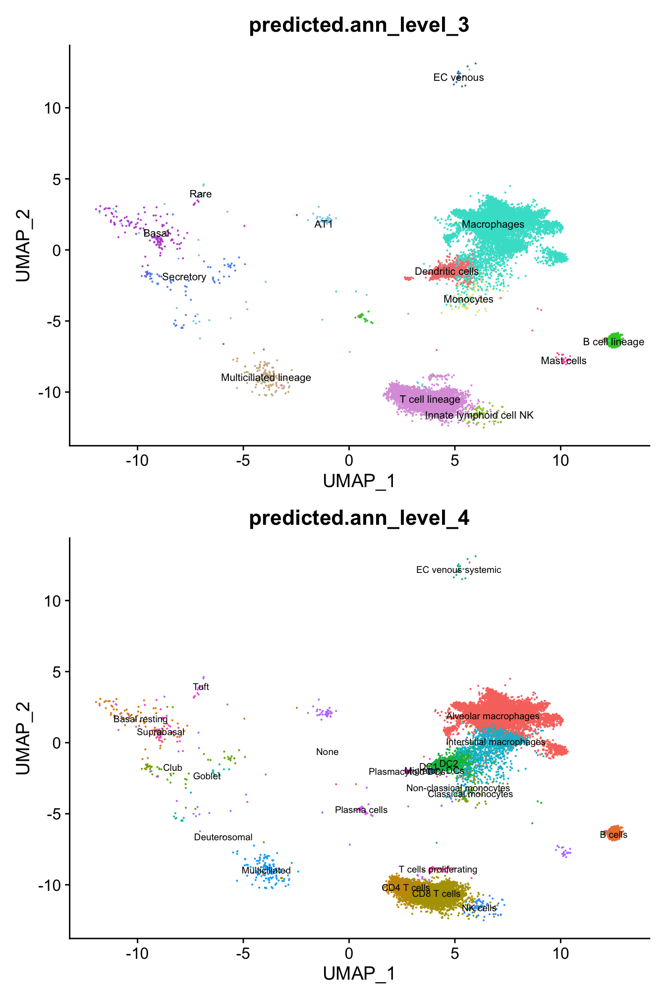
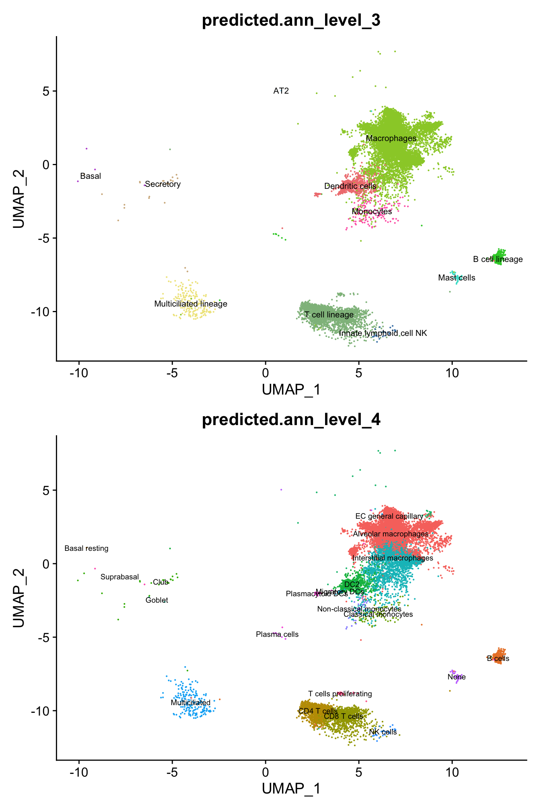
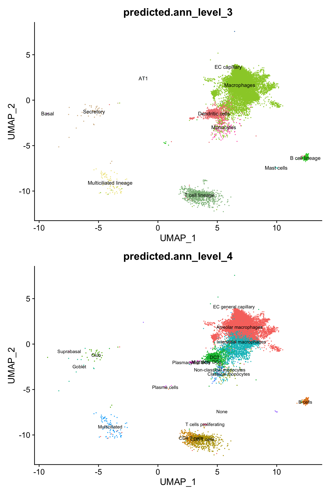
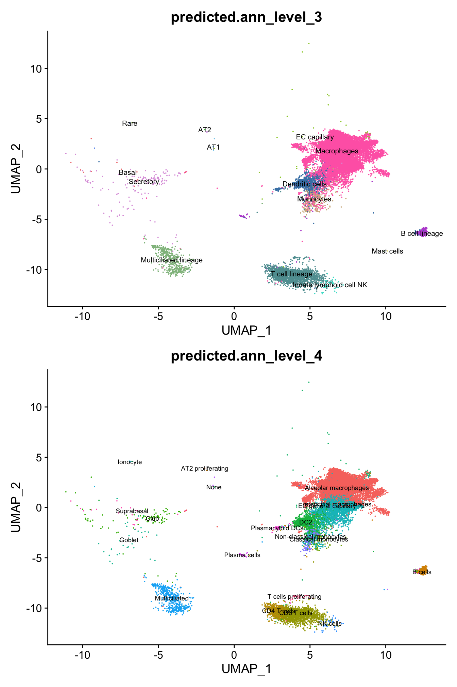
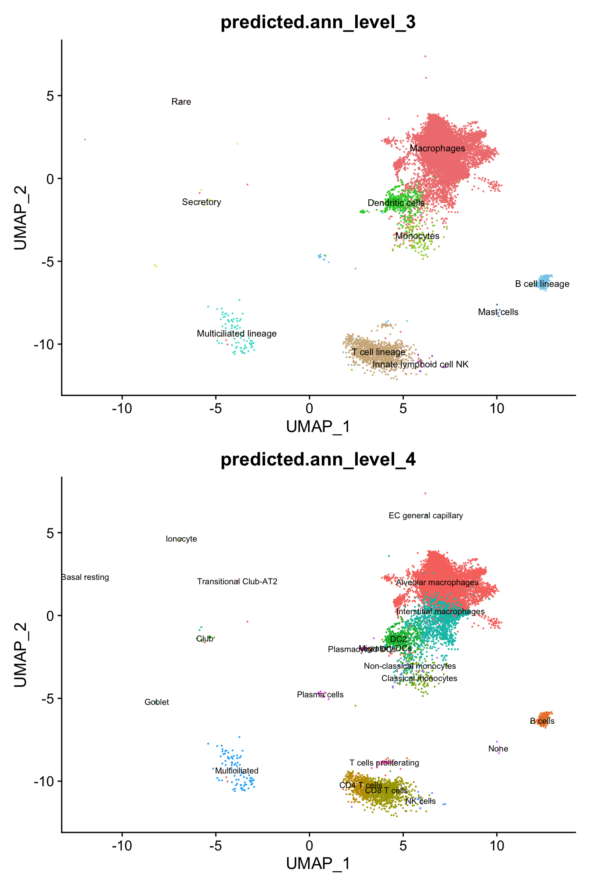
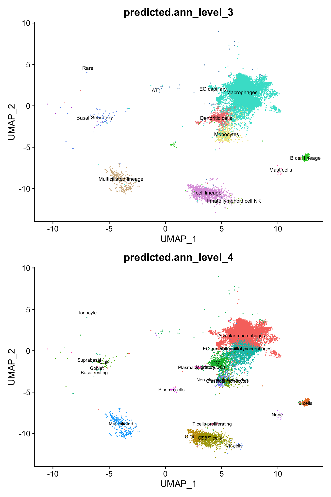
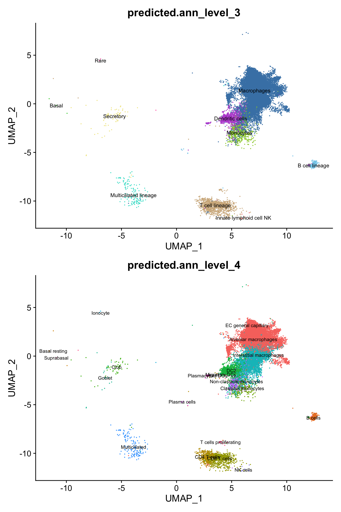

Last updated: 2024-03-04
Checks: 7 0
Knit directory: paed-inflammation-CITEseq/
This reproducible R Markdown analysis was created with workflowr (version 1.7.1). The Checks tab describes the reproducibility checks that were applied when the results were created. The Past versions tab lists the development history.
Great! Since the R Markdown file has been committed to the Git repository, you know the exact version of the code that produced these results.
Great job! The global environment was empty. Objects defined in the global environment can affect the analysis in your R Markdown file in unknown ways. For reproduciblity it’s best to always run the code in an empty environment.
The command set.seed(20240216) was run prior to running
the code in the R Markdown file. Setting a seed ensures that any results
that rely on randomness, e.g. subsampling or permutations, are
reproducible.
Great job! Recording the operating system, R version, and package versions is critical for reproducibility.
Nice! There were no cached chunks for this analysis, so you can be confident that you successfully produced the results during this run.
Great job! Using relative paths to the files within your workflowr project makes it easier to run your code on other machines.
Great! You are using Git for version control. Tracking code development and connecting the code version to the results is critical for reproducibility.
The results in this page were generated with repository version 23ddb68. See the Past versions tab to see a history of the changes made to the R Markdown and HTML files.
Note that you need to be careful to ensure that all relevant files for
the analysis have been committed to Git prior to generating the results
(you can use wflow_publish or
wflow_git_commit). workflowr only checks the R Markdown
file, but you know if there are other scripts or data files that it
depends on. Below is the status of the Git repository when the results
were generated:
Ignored files:
Ignored: .Rhistory
Ignored: .Rproj.user/
Untracked files:
Untracked: .DS_Store
Untracked: analysis/07.0_integrate_cluster_t_cells.Rmd
Untracked: code/dropletutils.R
Untracked: code/utility.R
Untracked: data/.DS_Store
Untracked: data/C133_Neeland_batch0/
Untracked: data/C133_Neeland_batch1/
Untracked: data/C133_Neeland_batch2/
Untracked: data/C133_Neeland_batch3/
Untracked: data/C133_Neeland_batch4/
Untracked: data/C133_Neeland_batch5/
Untracked: data/C133_Neeland_batch6/
Untracked: data/CZI_samples_design_with_micro.xlsx
Untracked: renv.lock
Untracked: renv/
Unstaged changes:
Modified: .Rprofile
Modified: .gitignore
Modified: analysis/01.0_preprocess_batch0.Rmd
Modified: analysis/01.1_preprocess_batch1.Rmd
Note that any generated files, e.g. HTML, png, CSS, etc., are not included in this status report because it is ok for generated content to have uncommitted changes.
These are the previous versions of the repository in which changes were
made to the R Markdown
(analysis/06.0_azimuth_annotation.Rmd) and HTML
(docs/06.0_azimuth_annotation.html) files. If you’ve
configured a remote Git repository (see ?wflow_git_remote),
click on the hyperlinks in the table below to view the files as they
were in that past version.
| File | Version | Author | Date | Message |
|---|---|---|---|---|
| Rmd | 23ddb68 | Jovana Maksimovic | 2024-03-04 | wflow_publish(c("analysis/06.0_azimuth_annotation.Rmd", "analysis/06.1_azimuth_annotation_decontx.Rmd")) |
| html | e16353b | Jovana Maksimovic | 2024-02-29 | Build site. |
| Rmd | ea5d591 | Jovana Maksimovic | 2024-02-29 | wflow_publish("analysis/06.0_azimuth_annotation.Rmd") |
| html | 7bf7f42 | Jovana Maksimovic | 2024-02-29 | Build site. |
| Rmd | 3f94bd1 | Jovana Maksimovic | 2024-02-29 | wflow_publish("analysis/06.0_azimuth_annotation.Rmd") |
suppressPackageStartupMessages({
library(BiocStyle)
library(tidyverse)
library(here)
library(glue)
library(patchwork)
library(scran)
library(scater)
library(scuttle)
library(scMerge)
library(ggupset)
library(Seurat)
library(SeuratData)
library(Azimuth)
})files <- list.files(here("data",
paste0("C133_Neeland_batch", 0:6),
"data",
"SCEs"),
pattern = "ambient_removed",
full.names = TRUE)
sceLst <- sapply(files, function(fn){
readRDS(file = fn)
})
sceLst$`/Users/maksimovicjovana/Work/Projects/MCRI/melanie.neeland/paed-inflammation-CITEseq/data/C133_Neeland_batch0/data/SCEs/C133_Neeland_batch0.ambient_removed.SCE.rds`
class: SingleCellExperiment
dim: 33538 25635
metadata(1): decontX
assays(2): counts decontXcounts
rownames(33538): ENSG00000243485 ENSG00000237613 ... ENSG00000277475
ENSG00000268674
rowData names(20): ID Symbol ... is_mito is_pseudogene
colnames(25635): 1_AAACCCAAGCTAGTTC-1 1_AAACCCACAGTCGCTG-1 ...
4_TTTGTTGTCTAGTACG-1 4_TTTGTTGTCTCGAACA-1
colData names(45): Barcode Capture ... decontX_contamination
decontX_clusters
reducedDimNames(4): decontX_A_UMAP decontX_B_UMAP decontX_C_UMAP
decontX_D_UMAP
mainExpName: NULL
altExpNames(0):
$`/Users/maksimovicjovana/Work/Projects/MCRI/melanie.neeland/paed-inflammation-CITEseq/data/C133_Neeland_batch1/data/SCEs/C133_Neeland_batch1.ambient_removed.SCE.rds`
class: SingleCellExperiment
dim: 36601 19522
metadata(1): decontX
assays(2): counts decontXcounts
rownames(36601): ENSG00000243485 ENSG00000237613 ... ENSG00000278817
ENSG00000277196
rowData names(20): ID Symbol ... is_mito is_pseudogene
colnames(19522): 1_AAACCCACACTTCCTG-1 1_AAACCCACAGACAAAT-1 ...
2_TTTGTTGTCATTGGTG-1 2_TTTGTTGTCGATGGAG-1
colData names(58): Barcode Capture ... decontX_contamination
decontX_clusters
reducedDimNames(1): decontX_UMAP
mainExpName: NULL
altExpNames(2): HTO ADT
$`/Users/maksimovicjovana/Work/Projects/MCRI/melanie.neeland/paed-inflammation-CITEseq/data/C133_Neeland_batch2/data/SCEs/C133_Neeland_batch2.ambient_removed.SCE.rds`
class: SingleCellExperiment
dim: 36601 22386
metadata(1): decontX
assays(2): counts decontXcounts
rownames(36601): ENSG00000243485 ENSG00000237613 ... ENSG00000278817
ENSG00000277196
rowData names(20): ID Symbol ... is_mito is_pseudogene
colnames(22386): 1_AAACCCAAGACTGTTC-1 1_AAACCCAAGATGATTG-1 ...
2_TTTGTTGTCCAAGGGA-1 2_TTTGTTGTCCTTCTAA-1
colData names(58): Barcode Capture ... decontX_contamination
decontX_clusters
reducedDimNames(1): decontX_UMAP
mainExpName: NULL
altExpNames(2): HTO ADT
$`/Users/maksimovicjovana/Work/Projects/MCRI/melanie.neeland/paed-inflammation-CITEseq/data/C133_Neeland_batch3/data/SCEs/C133_Neeland_batch3.ambient_removed.SCE.rds`
class: SingleCellExperiment
dim: 36601 46052
metadata(1): decontX
assays(2): counts decontXcounts
rownames(36601): ENSG00000243485 ENSG00000237613 ... ENSG00000278817
ENSG00000277196
rowData names(20): ID Symbol ... is_mito is_pseudogene
colnames(46052): 1_AAACCCAAGCAGCACA-1 1_AAACCCAAGCATCTTG-1 ...
2_TTTGTTGTCTAGGCCG-1 2_TTTGTTGTCTCGGCTT-1
colData names(58): Barcode Capture ... decontX_contamination
decontX_clusters
reducedDimNames(1): decontX_UMAP
mainExpName: NULL
altExpNames(2): HTO ADT
$`/Users/maksimovicjovana/Work/Projects/MCRI/melanie.neeland/paed-inflammation-CITEseq/data/C133_Neeland_batch4/data/SCEs/C133_Neeland_batch4.ambient_removed.SCE.rds`
class: SingleCellExperiment
dim: 36601 18858
metadata(1): decontX
assays(2): counts decontXcounts
rownames(36601): ENSG00000243485 ENSG00000237613 ... ENSG00000278817
ENSG00000277196
rowData names(20): ID Symbol ... is_mito is_pseudogene
colnames(18858): 1_AAACCCAAGGATTTGA-1 1_AAACCCAAGTCTCTGA-1 ...
2_TTTGTTGCATGTGGCC-1 2_TTTGTTGGTCAACATC-1
colData names(58): Barcode Capture ... decontX_contamination
decontX_clusters
reducedDimNames(1): decontX_UMAP
mainExpName: NULL
altExpNames(2): HTO ADT
$`/Users/maksimovicjovana/Work/Projects/MCRI/melanie.neeland/paed-inflammation-CITEseq/data/C133_Neeland_batch5/data/SCEs/C133_Neeland_batch5.ambient_removed.SCE.rds`
class: SingleCellExperiment
dim: 36601 32959
metadata(1): decontX
assays(2): counts decontXcounts
rownames(36601): ENSG00000243485 ENSG00000237613 ... ENSG00000278817
ENSG00000277196
rowData names(20): ID Symbol ... is_mito is_pseudogene
colnames(32959): 1_AAACCCAAGAAGATCT-1 1_AAACCCAAGGAGAGGC-1 ...
2_TTTGTTGTCGGATTAC-1 2_TTTGTTGTCTGAGAGG-1
colData names(58): Barcode Capture ... decontX_contamination
decontX_clusters
reducedDimNames(1): decontX_UMAP
mainExpName: NULL
altExpNames(2): HTO ADT
$`/Users/maksimovicjovana/Work/Projects/MCRI/melanie.neeland/paed-inflammation-CITEseq/data/C133_Neeland_batch6/data/SCEs/C133_Neeland_batch6.ambient_removed.SCE.rds`
class: SingleCellExperiment
dim: 36601 31275
metadata(1): decontX
assays(2): counts decontXcounts
rownames(36601): ENSG00000243485 ENSG00000237613 ... ENSG00000278817
ENSG00000277196
rowData names(20): ID Symbol ... is_mito is_pseudogene
colnames(31275): 1_AAACCCAAGAAGCGCT-1 1_AAACCCAAGACTCATC-1 ...
2_TTTGTTGTCCCGAGTG-1 2_TTTGTTGTCGAGAATA-1
colData names(58): Barcode Capture ... decontX_contamination
decontX_clusters
reducedDimNames(1): decontX_UMAP
mainExpName: NULL
altExpNames(2): HTO ADTseuLst <- sapply(sceLst, function(sce){
# Azimuth relies on gene symbols for annotation to add these as row names
rownames(sce) <- rowData(sce)$Symbol
# sum any rows that have the same gene symbol
CAGEfightR::utilsAggregateRows(counts(sce),
factor(rownames(sce)),
sparse = TRUE) -> count_matrix
seu <- Seurat::CreateSeuratObject(counts = count_matrix,
meta.data = data.frame(colData(sce)))
seu
})
seuLst$`/Users/maksimovicjovana/Work/Projects/MCRI/melanie.neeland/paed-inflammation-CITEseq/data/C133_Neeland_batch0/data/SCEs/C133_Neeland_batch0.ambient_removed.SCE.rds`
An object of class Seurat
33514 features across 25635 samples within 1 assay
Active assay: RNA (33514 features, 0 variable features)
$`/Users/maksimovicjovana/Work/Projects/MCRI/melanie.neeland/paed-inflammation-CITEseq/data/C133_Neeland_batch1/data/SCEs/C133_Neeland_batch1.ambient_removed.SCE.rds`
An object of class Seurat
36591 features across 19522 samples within 1 assay
Active assay: RNA (36591 features, 0 variable features)
$`/Users/maksimovicjovana/Work/Projects/MCRI/melanie.neeland/paed-inflammation-CITEseq/data/C133_Neeland_batch2/data/SCEs/C133_Neeland_batch2.ambient_removed.SCE.rds`
An object of class Seurat
36591 features across 22386 samples within 1 assay
Active assay: RNA (36591 features, 0 variable features)
$`/Users/maksimovicjovana/Work/Projects/MCRI/melanie.neeland/paed-inflammation-CITEseq/data/C133_Neeland_batch3/data/SCEs/C133_Neeland_batch3.ambient_removed.SCE.rds`
An object of class Seurat
36591 features across 46052 samples within 1 assay
Active assay: RNA (36591 features, 0 variable features)
$`/Users/maksimovicjovana/Work/Projects/MCRI/melanie.neeland/paed-inflammation-CITEseq/data/C133_Neeland_batch4/data/SCEs/C133_Neeland_batch4.ambient_removed.SCE.rds`
An object of class Seurat
36591 features across 18858 samples within 1 assay
Active assay: RNA (36591 features, 0 variable features)
$`/Users/maksimovicjovana/Work/Projects/MCRI/melanie.neeland/paed-inflammation-CITEseq/data/C133_Neeland_batch5/data/SCEs/C133_Neeland_batch5.ambient_removed.SCE.rds`
An object of class Seurat
36591 features across 32959 samples within 1 assay
Active assay: RNA (36591 features, 0 variable features)
$`/Users/maksimovicjovana/Work/Projects/MCRI/melanie.neeland/paed-inflammation-CITEseq/data/C133_Neeland_batch6/data/SCEs/C133_Neeland_batch6.ambient_removed.SCE.rds`
An object of class Seurat
36591 features across 31275 samples within 1 assay
Active assay: RNA (36591 features, 0 variable features)Annotate cells in each batch using the Human Lung Cell Atlas v2.0 reference.
options(timeout = max(1000000, getOption("timeout")))
batches <- str_extract(names(seuLst), "batch[0-6]")
seuLst <- sapply(1:length(seuLst), function(i){
out <- here("data",
paste0("C133_Neeland_", batches[i]),
"data",
"SCEs",
glue("C133_Neeland_{batches[i]}.azimuth_annotated.SEU.rds"))
if(!file.exists(out)){
tmp <- RunAzimuth(seuLst[[i]], reference = "lungref")
seu <- seuLst[[i]]
seu@meta.data <- tmp@meta.data
seu@reductions$ref.umap <- tmp@reductions$ref.umap
if(!is_empty(altExpNames(sceLst[[i]]))){
seu[["ADTs"]] <- CreateAssayObject(counts = counts(altExp(sceLst[[i]],
"ADT")))
}
saveRDS(seu, out)
fs::file_chmod(out, "664")
if(any(str_detect(fs::group_ids()$group_name,
"oshlack_lab"))) fs::file_chown(out,
group_id = "oshlack_lab")
} else {
seu <- readRDS(out)
}
seu
})
seuLst[[1]]
An object of class Seurat
33514 features across 25635 samples within 1 assay
Active assay: RNA (33514 features, 0 variable features)
1 dimensional reduction calculated: ref.umap
[[2]]
An object of class Seurat
36754 features across 19522 samples within 2 assays
Active assay: RNA (36591 features, 0 variable features)
1 other assay present: ADTs
1 dimensional reduction calculated: ref.umap
[[3]]
An object of class Seurat
36754 features across 22386 samples within 2 assays
Active assay: RNA (36591 features, 0 variable features)
1 other assay present: ADTs
1 dimensional reduction calculated: ref.umap
[[4]]
An object of class Seurat
36754 features across 46052 samples within 2 assays
Active assay: RNA (36591 features, 0 variable features)
1 other assay present: ADTs
1 dimensional reduction calculated: ref.umap
[[5]]
An object of class Seurat
36754 features across 18858 samples within 2 assays
Active assay: RNA (36591 features, 0 variable features)
1 other assay present: ADTs
1 dimensional reduction calculated: ref.umap
[[6]]
An object of class Seurat
36754 features across 32959 samples within 2 assays
Active assay: RNA (36591 features, 0 variable features)
1 other assay present: ADTs
1 dimensional reduction calculated: ref.umap
[[7]]
An object of class Seurat
36754 features across 31275 samples within 2 assays
Active assay: RNA (36591 features, 0 variable features)
1 other assay present: ADTs
1 dimensional reduction calculated: ref.umapp <- lapply(seuLst, function(seu){
DimPlot(seu, reduction = "ref.umap", group.by = "predicted.ann_level_3",
label = TRUE, label.size = 2.75) +
NoLegend() +
paletteer::scale_color_paletteer_d("miscpalettes::pastel") -> p1
DimPlot(seu, reduction = "ref.umap", group.by = "predicted.ann_level_4",
label = TRUE, label.size = 2.5) + NoLegend() -> p2
p1 / p2
})
p[[1]]
| Version | Author | Date |
|---|---|---|
| 7bf7f42 | Jovana Maksimovic | 2024-02-29 |
[[2]]
| Version | Author | Date |
|---|---|---|
| 7bf7f42 | Jovana Maksimovic | 2024-02-29 |
[[3]]
| Version | Author | Date |
|---|---|---|
| 7bf7f42 | Jovana Maksimovic | 2024-02-29 |
[[4]]
| Version | Author | Date |
|---|---|---|
| 7bf7f42 | Jovana Maksimovic | 2024-02-29 |
[[5]]
| Version | Author | Date |
|---|---|---|
| 7bf7f42 | Jovana Maksimovic | 2024-02-29 |
[[6]]
| Version | Author | Date |
|---|---|---|
| 7bf7f42 | Jovana Maksimovic | 2024-02-29 |
[[7]]
| Version | Author | Date |
|---|---|---|
| 7bf7f42 | Jovana Maksimovic | 2024-02-29 |
Create a single Seurat object and clean-up the
metadata.
out <- here("data/C133_Neeland_full_clean.SEU.rds")
if(!file.exists(out)){
seu <- merge(seuLst[[1]],
y = c(seuLst[2:7]))
rm(seuLst)
gc()
meta_regex <- "altexps|vireo|hashedDrops|refAssay|batch|Sample|sum|^detected|^dmmHTO|^Capture.|^total|mito_|percent.mt|orig|_call|_score|^scDblFinder|subsets"
keep <- !str_detect(colnames(seu@meta.data), meta_regex)
seu@meta.data <- seu@meta.data[, keep]
# extract RNA counts
rna <- seu[["RNA"]]@counts
# remove genes that are not expressed in any cells
rna <- rna[rowSums(rna) != 0, ]
# remove genes that are not expressed in >=50 cells across the full dataset
rna <- rna[nexprs(rna, byrow = TRUE) >= 50,]
seu[["RNA"]] <- CreateAssayObject(counts = rna)
saveRDS(seu, out)
fs::file_chmod(out, "664")
if(any(str_detect(fs::group_ids()$group_name,
"oshlack_lab"))) fs::file_chown(out,
group_id = "oshlack_lab")
} else {
rm(seuLst)
gc()
seu <- readRDS(out)
}
seuAn object of class Seurat
21731 features across 196687 samples within 2 assays
Active assay: RNA (21568 features, 0 variable features)
1 other assay present: ADTsSubset cell type groups.
cellsLst <- list(macrophages = seu[, seu$predicted.ann_level_3 == "Macrophages"],
t_cells = seu[, seu$predicted.ann_level_3 %in% c("T cell lineage",
"Innate lymphoid cell NK")],
other_cells = seu[, !seu$predicted.ann_level_3 %in% c("Macrophages",
"T cell lineage",
"Innate lymphoid cell NK")])
cellsLst$macrophages
An object of class Seurat
21731 features across 165553 samples within 2 assays
Active assay: RNA (21568 features, 0 variable features)
1 other assay present: ADTs
$t_cells
An object of class Seurat
21731 features across 15447 samples within 2 assays
Active assay: RNA (21568 features, 0 variable features)
1 other assay present: ADTs
$other_cells
An object of class Seurat
21731 features across 15687 samples within 2 assays
Active assay: RNA (21568 features, 0 variable features)
1 other assay present: ADTsSave objects.
sapply(1:length(cellsLst), function(i){
out <- here("data",
glue("C133_Neeland_full_clean_{names(cellsLst[i])}.SEU.rds"))
if(!file.exists(out)) saveRDS(cellsLst[[i]], out)
fs::file_chmod(out, "664")
if(any(str_detect(fs::group_ids()$group_name,
"oshlack_lab"))) fs::file_chown(out,
group_id = "oshlack_lab")
})[[1]]
NULL
[[2]]
NULL
[[3]]
NULL
sessionInfo()R version 4.3.2 (2023-10-31)
Platform: aarch64-apple-darwin20 (64-bit)
Running under: macOS Sonoma 14.3.1
Matrix products: default
BLAS: /Library/Frameworks/R.framework/Versions/4.3-arm64/Resources/lib/libRblas.0.dylib
LAPACK: /Library/Frameworks/R.framework/Versions/4.3-arm64/Resources/lib/libRlapack.dylib; LAPACK version 3.11.0
locale:
[1] en_US.UTF-8/en_US.UTF-8/en_US.UTF-8/C/en_US.UTF-8/en_US.UTF-8
time zone: Australia/Melbourne
tzcode source: internal
attached base packages:
[1] stats4 stats graphics grDevices datasets utils methods
[8] base
other attached packages:
[1] Azimuth_0.4.6 shinyBS_0.61.1
[3] lungref.SeuratData_2.0.0 SeuratData_0.2.2
[5] SeuratObject_4.1.4 Seurat_4.4.0
[7] ggupset_0.3.0 scMerge_1.18.0
[9] scater_1.30.1 scran_1.30.2
[11] scuttle_1.12.0 SingleCellExperiment_1.24.0
[13] SummarizedExperiment_1.32.0 Biobase_2.62.0
[15] GenomicRanges_1.54.1 GenomeInfoDb_1.38.6
[17] IRanges_2.36.0 S4Vectors_0.40.2
[19] BiocGenerics_0.48.1 MatrixGenerics_1.14.0
[21] matrixStats_1.2.0 patchwork_1.2.0
[23] glue_1.7.0 here_1.0.1
[25] lubridate_1.9.3 forcats_1.0.0
[27] stringr_1.5.1 dplyr_1.1.4
[29] purrr_1.0.2 readr_2.1.5
[31] tidyr_1.3.1 tibble_3.2.1
[33] ggplot2_3.5.0 tidyverse_2.0.0
[35] BiocStyle_2.30.0 workflowr_1.7.1
loaded via a namespace (and not attached):
[1] dichromat_2.0-0.1 progress_1.2.3
[3] nnet_7.3-19 goftest_1.2-3
[5] DT_0.32 Biostrings_2.70.2
[7] rstan_2.32.5 vctrs_0.6.5
[9] spatstat.random_3.2-2 digest_0.6.34
[11] png_0.1-8 git2r_0.33.0
[13] ggrepel_0.9.5 deldir_2.0-2
[15] parallelly_1.37.0 batchelor_1.18.1
[17] renv_1.0.3 MASS_7.3-60.0.1
[19] reshape2_1.4.4 httpuv_1.6.14
[21] withr_3.0.0 xfun_0.42
[23] ellipsis_0.3.2 survival_3.5-8
[25] memoise_2.0.1 proxyC_0.3.4
[27] ggbeeswarm_0.7.2 zoo_1.8-12
[29] gtools_3.9.5 pbapply_1.7-2
[31] DEoptimR_1.1-3 prettyunits_1.2.0
[33] Formula_1.2-5 rematch2_2.1.2
[35] KEGGREST_1.42.0 promises_1.2.1
[37] httr_1.4.7 restfulr_0.0.15
[39] globals_0.16.2 fitdistrplus_1.1-11
[41] cvTools_0.3.2 ps_1.7.6
[43] rstudioapi_0.15.0 miniUI_0.1.1.1
[45] generics_0.1.3 base64enc_0.1-3
[47] processx_3.8.3 curl_5.2.0
[49] zlibbioc_1.48.0 sfsmisc_1.1-17
[51] ScaledMatrix_1.10.0 polyclip_1.10-6
[53] GenomeInfoDbData_1.2.11 SparseArray_1.2.4
[55] CAGEfightR_1.22.0 xtable_1.8-4
[57] evaluate_0.23 S4Arrays_1.2.0
[59] BiocFileCache_2.10.1 hms_1.1.3
[61] irlba_2.3.5.1 filelock_1.0.3
[63] colorspace_2.1-0 hdf5r_1.3.9
[65] ROCR_1.0-11 reticulate_1.35.0
[67] spatstat.data_3.0-4 magrittr_2.0.3
[69] lmtest_0.9-40 later_1.3.2
[71] viridis_0.6.5 lattice_0.22-5
[73] spatstat.geom_3.2-8 future.apply_1.11.1
[75] robustbase_0.99-2 getPass_0.2-4
[77] XML_3.99-0.16.1 scattermore_1.2
[79] cowplot_1.1.3 RcppAnnoy_0.0.22
[81] Hmisc_5.1-1 pillar_1.9.0
[83] StanHeaders_2.32.5 nlme_3.1-164
[85] caTools_1.18.2 compiler_4.3.2
[87] beachmat_2.18.1 stringi_1.8.3
[89] tensor_1.5 GenomicAlignments_1.38.2
[91] plyr_1.8.9 BiocIO_1.12.0
[93] crayon_1.5.2 abind_1.4-5
[95] googledrive_2.1.1 locfit_1.5-9.8
[97] sp_2.1-3 bit_4.0.5
[99] whisker_0.4.1 codetools_0.2-19
[101] BiocSingular_1.18.0 bslib_0.6.1
[103] QuickJSR_1.1.3 paletteer_1.6.0
[105] biovizBase_1.50.0 plotly_4.10.4
[107] mime_0.12 splines_4.3.2
[109] Rcpp_1.0.12 dbplyr_2.4.0
[111] sparseMatrixStats_1.14.0 prismatic_1.1.1
[113] cellranger_1.1.0 interp_1.1-6
[115] knitr_1.45 blob_1.2.4
[117] utf8_1.2.4 reldist_1.7-2
[119] AnnotationFilter_1.26.0 fs_1.6.3
[121] listenv_0.9.1 checkmate_2.3.1
[123] DelayedMatrixStats_1.24.0 pkgbuild_1.4.3
[125] Gviz_1.46.1 Matrix_1.6-5
[127] callr_3.7.3 statmod_1.5.0
[129] tzdb_0.4.0 startupmsg_0.9.6.1
[131] pkgconfig_2.0.3 tools_4.3.2
[133] cachem_1.0.8 RSQLite_2.3.5
[135] viridisLite_0.4.2 DBI_1.2.1
[137] numDeriv_2016.8-1.1 fastmap_1.1.1
[139] rmarkdown_2.25 scales_1.3.0
[141] grid_4.3.2 ica_1.0-3
[143] shinydashboard_0.7.2 Rsamtools_2.18.0
[145] sass_0.4.8 BiocManager_1.30.22
[147] VariantAnnotation_1.48.1 dotCall64_1.1-1
[149] RANN_2.6.1 rpart_4.1.23
[151] farver_2.1.1 mgcv_1.9-1
[153] yaml_2.3.8 latticeExtra_0.6-30
[155] foreign_0.8-86 rtracklayer_1.62.0
[157] cli_3.6.2 leiden_0.4.3.1
[159] lifecycle_1.0.4 uwot_0.1.16
[161] M3Drop_1.28.0 mvtnorm_1.2-4
[163] presto_1.0.0 bluster_1.12.0
[165] backports_1.4.1 BiocParallel_1.36.0
[167] distr_2.9.3 rjson_0.2.21
[169] timechange_0.3.0 gtable_0.3.4
[171] ggridges_0.5.6 densEstBayes_1.0-2.2
[173] progressr_0.14.0 parallel_4.3.2
[175] limma_3.58.1 jsonlite_1.8.8
[177] edgeR_4.0.15 bitops_1.0-7
[179] assertthat_0.2.1 bit64_4.0.5
[181] Rtsne_0.17 spatstat.utils_3.0-4
[183] BiocNeighbors_1.20.2 RcppParallel_5.1.7
[185] bdsmatrix_1.3-6 highr_0.10
[187] jquerylib_0.1.4 metapod_1.10.1
[189] dqrng_0.3.2 loo_2.6.0
[191] shinyjs_2.1.0 SeuratDisk_0.0.0.9021
[193] lazyeval_0.2.2 shiny_1.8.0
[195] ruv_0.9.7.1 htmltools_0.5.7
[197] sctransform_0.4.1 rappdirs_0.3.3
[199] ensembldb_2.26.0 spam_2.10-0
[201] googlesheets4_1.1.1 ResidualMatrix_1.12.0
[203] XVector_0.42.0 RCurl_1.98-1.14
[205] rprojroot_2.0.4 BSgenome_1.70.2
[207] jpeg_0.1-10 gridExtra_2.3
[209] igraph_2.0.1.1 R6_2.5.1
[211] gplots_3.1.3.1 labeling_0.4.3
[213] GenomicFeatures_1.54.3 cluster_2.1.6
[215] bbmle_1.0.25.1 gargle_1.5.2
[217] ProtGenerics_1.34.0 rstantools_2.4.0
[219] DelayedArray_0.28.0 tidyselect_1.2.0
[221] vipor_0.4.7 htmlTable_2.4.2
[223] xml2_1.3.6 inline_0.3.19
[225] AnnotationDbi_1.64.1 future_1.33.1
[227] rsvd_1.0.5 munsell_0.5.0
[229] KernSmooth_2.23-22 data.table_1.15.0
[231] htmlwidgets_1.6.4 RColorBrewer_1.1-3
[233] biomaRt_2.58.2 rlang_1.1.3
[235] spatstat.sparse_3.0-3 spatstat.explore_3.2-6
[237] fansi_1.0.6 beeswarm_0.4.0